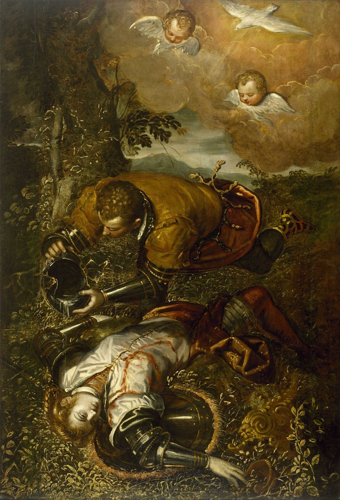
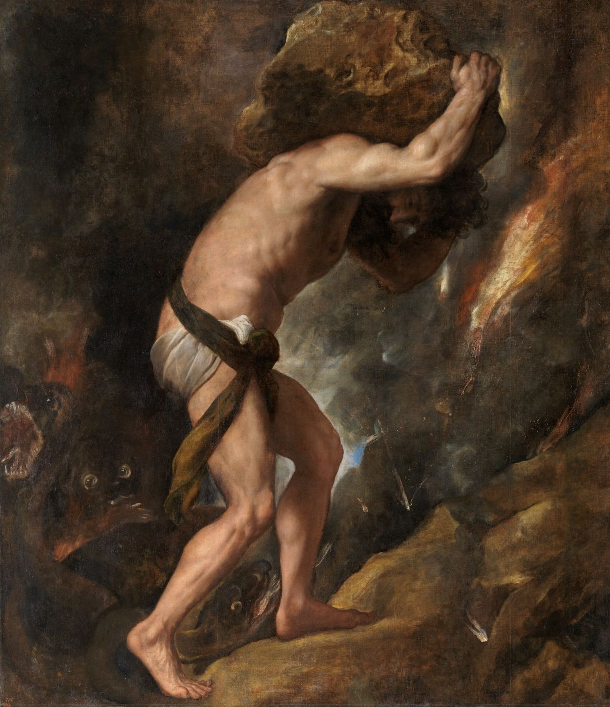

Cet essai a d’abord paru en turc. La version française est de ma main.


Er reproduziert es nicht als Erinnerung, sondern als Tat.
Sigmund Freud, « Erinnern, Wiederholen und Durcharbeiten » (1914)
La reprise et le ressouvenir sont le même mouvement, mais en sens opposé.
Søren Kierkegaard, La Reprise (1843)
I
S’attacher toujours à quelqu’un d’indisponible, être toujours quitté, endosser toujours le rôle du sauveur, ou fuir toujours au même point dès que l’intimité grandit. Les schémas relationnels qui se répètent comptent parmi les raisons les plus fréquentes de demander une aide psychologique, et leur trait le plus étrange est que la personne voit d’ordinaire très bien le schéma. Elle peut prévoir comment finira la prochaine relation, a peut-être raconté plusieurs fois la même histoire à ses amis ; et pourtant elle ne peut s’empêcher de reprendre le même chemin. Que ce savoir ne suffise pas à briser la force de la répétition montre que celle-ci s’enracine bien plus profondément qu’un choix conscient. Les phrases qui disent cette expérience se ressemblent elles aussi : « Je choisis toujours les mauvaises personnes », « Il y a une malédiction sur moi », « C’est sans doute mon destin ». Chacune de ces phrases rattache la répétition à quelque chose qui vient du dehors : un malheur, une malédiction, un destin. Le regard que propose la psychanalyse est dérangeant, mais porteur d’espoir : la répétition a un auteur, et cet auteur, en un lieu que la personne ignore, c’est elle-même.
Freud décrit ce tableau en 1920, au troisième chapitre d’Au-delà du principe de plaisir, par des exemples inoubliables : le bienfaiteur que tous ceux qu’il a protégés finissent par payer d’ingratitude ; l’homme dont toutes les amitiés finissent par une trahison ; celui qui, l’un après l’autre, élève quelqu’un à une position d’autorité pour l’en faire ensuite tomber ; et l’amoureux dont chaque liaison passe par les mêmes phases et aboutit à la même fin. Le plus frappant des exemples de Freud est celui d’une femme qui se maria trois fois, dont les trois maris tombèrent malades peu après le mariage, et qu’elle dut soigner sur leur lit de mort.1 Freud appelle « compulsion de destinée » cette structure qui fait paraître la vie de ces personnes comme gouvernée par une puissance « démoniaque », et ajoute que la psychanalyse peut montrer que ce destin est pour l’essentiel agencé, inconsciemment, par la personne elle-même.
L’exemple littéraire que Freud cite dans ce contexte est une scène de l’épopée du Tasse, La Jérusalem délivrée, parue en 1581. Le chevalier croisé Tancrède aime Clorinde, guerrière de l’armée ennemie ; mais une nuit, sans reconnaître la personne sous l’armure, il la combat et la tue. Il ne reconnaît Clorinde mourante qu’en lui retirant son casque. Plus tard, pénétrant dans une forêt enchantée, il frappe un arbre de son épée ; du sang coule de l’arbre, et la voix de Clorinde dit que son âme y est enfermée et que son bien-aimé l’a blessée une fois encore.2 La scène saisit parfaitement l’horreur de la répétition : une catastrophe vécue une fois se produit de nouveau, sans le savoir, sans le vouloir.
Un an plus tôt, Freud avait décrit ce visage inquiétant de la répétition à travers un petit incident qui lui était arrivé. Se promenant un chaud après-midi d’été dans les rues désertes d’une petite ville italienne qu’il ne connaissait pas, il se retrouve dans une rue dont les fenêtres laissent voir des femmes fardées et s’en éloigne en hâte. Après avoir erré un moment sans but, il se retrouve soudain dans la même rue. Il s’en éloigne de nouveau, prend une autre direction ; et après un détour, arrive une troisième fois au même endroit. Freud écrit qu’il ne pouvait appeler le sentiment qui l’envahit alors qu’« inquiétante étrangeté », et qu’il fut heureux de renoncer à sa promenade d’exploration et de regagner la piazza.3 Arriver encore et encore, malgré soi, à un endroit où l’on ne veut pas être : le petit souvenir de Freud résume la structure des relations qui se répètent avec la simplicité d’un conte. On croit fuir un lieu ; mais tous les chemins, par des détours choisis sans le savoir, mènent à la même rue.
II
Freud avait trouvé le sens clinique de la répétition six ans plus tôt, en 1914, dans un court article technique intitulé Remémoration, répétition et perlaboration. Il y observe que les analysants ne se souviennent pas de certaines parties de leur passé, mais les revivent sous forme d’actes : l’analysant ne se remémore pas ce qui a été oublié et refoulé, il l’agit ; il le reproduit non comme souvenir, mais comme acte, et naturellement sans savoir qu’il le répète.4 Ce qui ne peut être remémoré se répète ; la répétition est une manière dont l’inconscient se souvient.
L’une des idées les plus fécondes de l’article est que le transfert sert d’« arène » à cette répétition. Les formes de relation qui se répètent dans la vie de l’analysant apparaissent aussi dans la relation analytique ; mais cette fois dans une liberté presque totale, sous une forme observable et dont on peut parler. Freud dit que le travail de la cure consiste à accueillir la répétition dans cet espace et à la transformer peu à peu en remémoration et en parole ; il appelle ce travail de transformation Durcharbeiten, la perlaboration. La perlaboration ne s’accomplit pas en comprenant une fois ; c’est un labeur patient qui exige de reprendre la même résistance, la même répétition, encore et encore, sous des formes différentes. À la fin de l’article, Freud admet que ce travail peut être pénible pour l’analysant et une épreuve de patience pour l’analyste ; mais il ajoute aussitôt que c’est précisément la perlaboration qui produit chez l’analysant les plus grands changements et qui distingue la cure analytique de tout traitement par suggestion.5 Voir une fois un schéma ne suffit pas à ne plus le vivre. Il faut le reconnaître de nouveau dans la relation suivante, dans le travail suivant, et jusque dans la relation à l’analyste, en le voyant chaque fois un peu plus tôt, un peu plus clairement.
III
Au-delà du principe de plaisir a été écrit pour chercher une réponse à la question de savoir pourquoi la répétition se tourne aussi vers des expériences douloureuses, et la scène la plus célèbre de cette recherche est un jeu d’enfant. Freud observe que son petit-fils, âgé d’un an et demi, lorsque sa mère quittait la maison, lançait par-dessus le bord de son lit une bobine de bois attachée à une ficelle, de sorte qu’elle disparaisse, en émettant un long « o-o-o-o », puis, tirant la ficelle pour ramener la bobine, l’accueillait joyeusement d’un « da ». En allemand, fort signifie parti ; da, voilà.6 L’enfant répète dans le jeu le départ de sa mère, c’est-à-dire une expérience qui lui fait mal. Selon l’interprétation de Freud, le jeu est une tentative de maîtriser une expérience subie passivement en la remettant activement en scène ; et le trait le plus remarquable du jeu est que la partie « parti » est jouée bien plus souvent que la partie « voilà ».
Le jeu a aussi un épilogue amer. L’enfant qui lançait la bobine était Ernst, le fils aîné de Sophie, la fille de Freud. Sophie mourut en janvier 1920, à vingt-six ans, pendant la pandémie de grippe qui ravageait le monde ; Au-delà du principe de plaisir parut cette année-là. Dans une courte note ajoutée au livre, Freud écrit que lorsque l’enfant avait cinq ans et trois quarts, sa mère mourut, et que maintenant qu’elle était vraiment « partie », l’enfant ne montra aucun signe de deuil.7 La mère renvoyée et rappelée des milliers de fois dans le jeu, cette fois, ne reviendrait pas. Cet enfant devint psychanalyste et travailla de longues années sur les premières relations entre les bébés et leurs mères. La ficelle de la bobine ne fut peut-être jamais lâchée, sa vie durant.
Dans son séminaire de 1964, Lacan lit ce jeu depuis un autre lieu que l’interprétation freudienne de la maîtrise. Pour lui, la bobine est moins un jouet tenant lieu de la mère qu’une petite partie détachée de l’enfant, mais qui lui appartient encore ; en lançant la bobine, l’enfant ne joue pas sa mère, mais ce qui s’arrache de lui avec le départ de celle-ci.8 La véritable invention du jeu, ce sont les deux syllabes qui accompagnent le mouvement de la bobine. « O-o-o » et « da » forment une paire d’opposés : l’un marque l’absence, l’autre la présence. Par ces deux sons, l’enfant entre dans la structure la plus élémentaire du langage, un ordre où une chose peut être nommée même là où elle manque. La première forme de la répétition est, en ce sens, l’entrée même dans le langage : ce qui est perdu est pris, par la répétition alternée de deux syllabes, dans une langue capable de supporter une perte. Le départ de la mère ne peut être changé ; mais il peut désormais se dire.
Mais Freud ne se contente pas de cette explication. Les rêves des névroses de guerre, qui ramènent la personne chaque nuit à la scène traumatique, les déceptions infantiles revécues encore et encore dans la cure, et les exemples de compulsion de destinée lui font penser qu’il existe une tendance plus fondamentale, opérant au-delà du principe de plaisir. Dans les chapitres suivants du livre, il rattache spéculativement cette tendance à la pulsion de mort. Les prétentions biologiques de cette spéculation sont aujourd’hui discutées ; mais son noyau clinique, l’observation que l’être humain peut s’obstiner à revenir à ce qui le fait souffrir, compte parmi les acquis les plus solides de la psychanalyse.
L’arrière-plan historique de cette observation est la Première Guerre mondiale. Des milliers de soldats revenaient des tranchées pleins de secousses, de tremblements, de paralysies, de mutismes, et de rêves qui les ramenaient chaque nuit à la même scène : une explosion, la mort d’un camarade. Le cinquième congrès psychanalytique international, réuni à Budapest en septembre 1918, fut entièrement consacré aux névroses de guerre ; Ferenczi, Abraham et Ernst Simmel y présentèrent leur expérience des hôpitaux militaires, et les autorités sanitaires des armées européennes suivirent le congrès par des observateurs officiels.9 Si Freud cherche deux ans plus tard ce qui se trouve au-delà du principe de plaisir, c’est pour trouver une réponse à l’existence de ces rêves. Le rêve, qu’il avait défini comme accomplissement de désir, répétait ici l’horreur elle-même. L’explication que trouva Freud est que les rêves traumatiques tentent d’établir après coup la préparation que l’angoisse n’avait pu fournir contre l’effroi : le psychisme tente, en revivant sans cesse ce qui l’a autrefois pris au dépourvu, de s’y préparer après coup.


En pleine Seconde Guerre mondiale, dans son essai de 1942, Albert Camus donne à ce vieux mythe une fin inattendue. Les dieux avaient condamné Sisyphe à rouler un rocher jusqu’au sommet d’une montagne et à recommencer chaque fois qu’il retombait ; ils avaient pensé qu’il n’est pas de punition plus terrible que le travail inutile et sans espoir. Camus tourne son attention vers le bref moment où le rocher redescend et où Sisyphe marche vers la plaine pour recommencer. La dernière phrase de l’essai est une invitation : « Il faut imaginer Sisyphe heureux. »10 La psychanalyse accueille l’invitation avec prudence. La répétition névrotique n’est pas une figure qui, comme le Sisyphe conscient et révolté de Camus, assume son propre destin ; elle porte le rocher sans savoir ce qu’est le rocher ni pourquoi elle le porte. Mais un versant de l’intuition de Camus est proche du but de l’analyse : le changement commence non quand le rocher disparaît, mais quand celui qui le porte change son rapport à son propre destin, quand, dans ce bref moment où il redescend, il peut voir ce qu’il porte.
IV
En 1910, dans un article sur le choix d’objet chez l’homme, Freud avait aussi examiné une forme particulière de relation amoureuse qui se répète. Il y observe que certains hommes ne peuvent tomber amoureux qu’à certaines conditions : que la femme aimée appartienne à un autre homme, c’est-à-dire qu’il y ait un « tiers lésé », et qu’elle ait une réputation sexuellement douteuse. Ces hommes vivent leurs amours avec une grande passion et une grande fidélité ; mais ces amours se succèdent en une longue série, autour des mêmes conditions. Derrière cette série, Freud trouve le fantasme de sauver la femme aimée et un vieux scénario infantile lié à la mère.11 La leçon durable de l’article est que ce qui nous attire n’est souvent pas une personne tout entière, mais une condition particulière, un trait : une manière de regarder, une distance, un manque, un interdit. Ce trait occupe une place toute particulière dans notre histoire inconsciente.
Le scénario répété ne vient pas toujours de l’enfance du sujet ; il est parfois hérité de la génération précédente, d’une histoire jamais racontée. Dans les années 1970, les psychanalystes français d’origine hongroise Nicolas Abraham et Maria Torok ont proposé deux concepts pour penser cette transmission. Un deuil, une honte, un secret qu’un parent a vécus sans jamais pouvoir les mettre en mots sont gardés en lui comme dans un tombeau, une crypte ; et ce secret passe à l’enfant comme un « fantôme » qu’il ne connaît pas, mais qui fait sentir ses effets de façon étrange dans sa vie.12 Le fantôme n’est pas quelque chose que le sujet a refoulé ; c’est la parole non dite d’un autre. Celui qui se heurte dans sa vie à une répétition inexplicable, perdre toujours quelque chose à un certain âge, tomber toujours dans le même genre de relation, tomber toujours malade à une certaine date, découvre parfois en analyse que cette répétition met en scène une histoire jamais racontée de sa famille : l’enfant mort jeune d’une grand-mère, la faillite cachée d’un père, le deuil inachevé d’une émigration. La répétition, ici, c’est la génération suivante qui vit, dans son corps et dans sa vie et sans le savoir, ce qu’une génération n’a pu dire.
Lacan approfondit cette pensée avec le concept de fantasme. Le fantasme est un scénario inconscient qui ordonne le désir du sujet, un scénario sur ce que nous sommes et sur ce que nous sommes dans le désir de l’autre ; Lacan l’écrit comme la formule du rapport du sujet à l’objet qui cause son désir. Celui qui est toujours quitté s’est peut-être constitué comme quelqu’un qui ne peut exister que dans l’absence de l’amour ; celui qui sauve toujours croit ne pouvoir trouver une place que lorsque l’autre manque. Ces scénarios font souffrir, mais ils produisent aussi une sorte de satisfaction. Lacan appelle cette satisfaction paradoxale jouissance : dans ce dont nous nous plaignons se cache un gain secret qui nous y attache. C’est pourquoi la répétition est si tenace ; car ce qui se répète n’est pas seulement une douleur, mais une jouissance tissée dans cette douleur.
V
Dans son onzième séminaire, en 1964, Les Quatre Concepts fondamentaux de la psychanalyse, Lacan revient à la répétition comme l’un des quatre concepts fondamentaux de la psychanalyse, avec l’inconscient, le transfert et la pulsion, et la pense dans une langue nouvelle. Il emprunte pour cela deux termes à une distinction qu’Aristote établit à propos de la causalité dans la Physique. L’automaton est le retour des signes, fonctionnant d’eux-mêmes comme un mécanisme : les mêmes phrases, les mêmes rôles, les mêmes scènes. La tuché est le hasard, la rencontre : une rencontre inattendue et inévitable avec le Réel. Pour Lacan, derrière la répétition se trouve une rencontre manquée à chaque fois ; la répétition est une nouvelle tentative d’une rencontre qui n’a jamais tout à fait eu lieu.13 Que Lacan traduise la Wiederholungszwang freudienne, la compulsion de répétition, par « automatisme de répétition » souligne aussi ce versant mécanique.
Un autre penseur que Lacan évoque dans cette leçon est Kierkegaard. Dans La Reprise, publiée en 1843 sous le pseudonyme de Constantin Constantius, Kierkegaard oppose son propre concept de reprise à la réminiscence grecque : le ressouvenir va vers l’arrière, la reprise vers l’avant.14 Dans le passage le plus émouvant du livre, le narrateur retourne à Berlin pour reprendre un voyage qu’il y a fait jadis, loge à la même pension, va au même théâtre ; mais rien n’est pareil, et la seule chose qu’il apprend au cours du voyage est l’impossibilité de la reprise. Du point de vue psychanalytique, cette scène révèle l’espoir secret de la répétition névrotique : on remonte sans cesse la même scène parce qu’on espère que, cette fois, la fin sera différente, que ce qui a été manqué jadis adviendra enfin.
Dans la littérature turque, le portrait le plus sombre de cet espoir est Anayurt Oteli (« L’Hôtel Anayurt ») de Yusuf Atılgan, paru en 1973. Zebercet, réceptionniste d’un hôtel de petite ville, passe sa vie dans un ordre immuable, accomplissant chaque jour les mêmes tâches aux mêmes heures. Une nuit, une femme arrivée par le train d’Ankara retardé loge à l’hôtel et repart le lendemain matin. Dès lors, Zebercet consacre toute sa vie à attendre son retour : il garde la chambre où elle a dormi exactement en l’état, ne défait pas le lit, ne la donne à personne, y entre chaque jour pour regarder les traces qu’elle a laissées. La femme ne revient pas. L’ordre de Zebercet devient peu à peu celui d’une répétition, d’un rituel, et finalement d’une ruine.15 Le roman d’Atılgan est un écho local et bouleversant du voyage berlinois de Kierkegaard et de la compulsion de destinée de Freud. Zebercet attend la répétition d’une rencontre vécue une fois, peut-être d’une promesse jamais vraiment faite ; et tant que ce qu’il attend ne vient pas, sa manière même d’attendre devient peu à peu une répétition insupportable.
VI
En dehors de la psychanalyse aussi, la répétition a été l’une des grandes questions de la pensée occidentale. Au paragraphe 341 du Gai Savoir, paru en 1882, Friedrich Nietzsche invite son lecteur à une expérience de pensée : et si, une nuit, un démon se glissait jusqu’à vous dans votre plus solitaire solitude et vous disait que cette vie que vous vivez et avez vécue, vous devrez la vivre encore une fois et d’innombrables fois, sans rien de nouveau, chaque douleur et chaque joie revenant dans le même ordre ?16 Pour Nietzsche, cette pensée est la plus lourde épreuve du rapport de chacun à sa propre vie : être quelqu’un qui peut dire oui à l’éternel retour, qui peut affirmer sa vie telle qu’elle est. La psychanalyse lit cette épreuve à rebours. La répétition névrotique n’est pas le retour d’une vie affirmée, mais celui d’un moment jamais vécu tout à fait ; on répète sa vie là où l’on ne peut lui dire oui.
Dans Différence et répétition, paru en 1968, Gilles Deleuze lit la compulsion de répétition de Freud, l’éternel retour de Nietzsche et la reprise de Kierkegaard dans un même horizon de pensée, et soutient que la répétition, plutôt que le retour du même, est un mouvement qui produit chaque fois de la différence.17 Cette pensée est extrêmement féconde en clinique : aucune répétition n’est jamais tout à fait la même, et le travail analytique avance précisément en prêtant attention à ces petites différences, aux points où le même scénario se joue chaque fois un peu autrement.
Un récit que Deleuze évoque souvent fait de cette idée un jeu littéraire. Dans la nouvelle de Jorge Luis Borges « Pierre Ménard, auteur du Quichotte », parue en 1939, un écrivain français entreprend de réécrire mot pour mot le roman de Cervantès, sans le copier, et parvient à en écrire quelques chapitres. Le narrateur compare les deux textes : les mots sont identiques ; mais le texte de Ménard, parce qu’il a été écrit au vingtième siècle, trois cents ans après Cervantès, porte de tout autres significations, et est, selon le narrateur, presque infiniment plus riche.18 La même phrase, dite à une autre époque par un autre sujet, n’est pas la même phrase. Il en va ainsi en analyse : l’analysant raconte bien des fois la même histoire, vit bien des fois la même relation ; mais à chaque récit, en un lieu où l’analyste écoute, les mêmes mots prennent un poids légèrement différent. Cette petite différence au sein de la répétition est le lieu où commence le changement.
L’expression la plus connue de cette idée dans la culture populaire est peut-être le film de Harold Ramis, Un jour sans fin (1993). Un présentateur météo arrogant et cynique est condamné à revivre d’innombrables fois le même jour, le 2 février, dans une petite ville. Il exploite d’abord cette répétition, puis sombre dans le désespoir, tente maintes fois de se tuer, et se réveille chaque matin dans le même lit, sur la même chanson. La boucle ne se brise que lorsqu’il apprend à être un autre au sein du même jour, à se tourner autrement vers les autres et vers son propre désir. Le film est presque un exemple de manuel d’une thèse psychanalytique : la répétition prend fin non quand les conditions extérieures changent, mais quand change le rapport du sujet aux mêmes conditions. Ce que Freud appelait perlaboration, c’est revivre le même jour encore et encore, mais chaque fois en sachant un peu plus.
VII
Remarquer un schéma qui se répète est le premier pas pour le transformer ; mais seulement le premier. On peut approfondir cette prise de conscience en se posant quelques questions. À quel moment mes relations commencent-elles d’ordinaire à se défaire ? Est-ce que je m’y retrouve toujours dans un rôle semblable ? Les personnes qui m’attirent ont-elles une condition commune, du genre de celles dont parle Freud ? À la fin d’une relation, est-ce que je me dis toujours la même phrase, et cette phrase m’est-elle familière depuis des périodes plus anciennes de ma vie ? Ces questions font de chacun le narrateur de sa propre histoire ; mais comme ce qui entretient la répétition n’est pas un choix conscient, y répondre ne suffit souvent pas à lui seul.
La culture amoureuse d’aujourd’hui a ajouté une scène nouvelle à cette structure de la répétition. Les applications de rencontre offrent d’innombrables possibilités sur un écran, l’une après l’autre, d’un geste du doigt. À première vue, on pourrait penser que cette abondance délivrera des vieux schémas et brisera la tendance à toujours s’attacher au même type. L’expérience clinique montre souvent le contraire : la multiplication des possibilités ne change pas la répétition elle-même ; elle ne fait que l’accélérer. Parmi des centaines de profils, on choisit sans s’en apercevoir celui qui porte de nouveau la même distance, le même manque, la même manière de regarder ; la relation finit de nouveau au même point, sur la même phrase, et l’on passe au profil suivant. La répétition ne naît pas d’un manque de choix, mais d’une préférence que l’inconscient opère avant tout choix ; et cette préférence ne change pas avec le nombre des possibilités.
Dans le travail analytique, comme Freud le proposait en 1914, la répétition est accueillie dans l’arène de la relation transférentielle. À la différence des scènes de la vie réelle, c’est un lieu où l’on ne paie pas le prix de la répétition, où une relation peut être examinée sans être détruite, sans que personne ne soit quitté ni blessé. Ce qui se répète dans les relations commence à apparaître dans la relation analytique ; mais cette fois, au lieu d’être mis en scène, cela peut être parlé, interrogé, compris avec son histoire. Ce processus ne change pas le passé de la personne, mais il change son rapport au passé. On peut reconnaître les premiers pas du chemin qui mène toujours au même endroit, et remarquer les moments où un autre choix est possible. Entre la reprise que Kierkegaard jugeait impossible et la répétition compulsive de la névrose, il est une troisième possibilité que l’analyse tente d’ouvrir : non pas revivre la même chose, mais qu’au sein même de la répétition quelque chose de nouveau puisse naître. Que Tancrède puisse s’arrêter avant que son épée ne frappe l’arbre une seconde fois, ou du moins frapper en sachant qui il blesse. Faire ce que fit Freud lorsqu’il arriva pour la troisième fois dans la même rue de la petite ville italienne : rebrousser chemin, regagner la piazza, choisir sa route en connaissance de cause.
Notes
- S. Freud, Au-delà du principe de plaisir (1920), chapitre III. Les textes de Freud sont cités sous leurs titres français usuels, avec l’année de première publication. ↩︎
- T. Tasso, Gerusalemme liberata (1581), chants XII et XIII. Freud cite cette scène comme la représentation poétique « la plus émouvante » de la compulsion de destinée. Claudio Monteverdi a mis en musique le duel nocturne de Tancrède et Clorinde dans son madrigal dramatique Il combattimento di Tancredi e Clorinda, représenté à Venise en 1624 ; l’œuvre compte parmi les premières pièces musicales à imiter par les instruments le rythme du combat. ↩︎
- S. Freud, « L’inquiétante étrangeté » (1919), deuxième partie. Freud y donne aussi comme exemples de ce genre d’inquiétante étrangeté l’expérience de celui qui, égaré dans une forêt brumeuse, revient sans cesse au même endroit, ou de celui qui, cherchant la porte dans une pièce obscure, se heurte toujours au même meuble. ↩︎
- S. Freud, « Remémoration, répétition et perlaboration » (1914). ↩︎
- Freud, « Erinnern, Wiederholen und Durcharbeiten » (1914), Gesammelte Werke X. Freud y souligne que les jeunes analystes commettent l’erreur de croire qu’il suffit de nommer une résistance pour la lever, alors qu’il faut laisser à l’analysant le temps de reconnaître sa résistance, de la perlaborer et de la surmonter. ↩︎
- Freud, Au-delà du principe de plaisir, chapitre II. ↩︎
- Freud, Jenseits des Lustprinzips (1920), chapitre II, note. Devenu adulte, Ernst Halberstadt prit le nom de W. Ernest Freud et exerça comme psychanalyste d’enfants à Londres ; il raconta toute sa vie être l’enfant de la célèbre observation de son grand-père. ↩︎
- J. Lacan, Le Séminaire, Livre XI, leçon « Tuché et automaton ». Lacan interprète la bobine comme une partie qui se sépare du sujet tout en lui appartenant encore, une première forme de l’objet cause du désir. ↩︎
- S. Ferenczi, K. Abraham, E. Simmel et E. Jones, Zur Psychoanalyse der Kriegsneurosen, Leipzig et Vienne, Internationaler Psychoanalytischer Verlag, 1919 ; Freud écrivit une introduction au volume. Avec la fin de la guerre, les projets de centres de traitement psychanalytique dans les armées furent abandonnés. ↩︎
- A. Camus, Le Mythe de Sisyphe, Paris, Gallimard, 1942. Pour Camus, le destin de Sisyphe lui appartient ; son rocher est sa chose. ↩︎
- S. Freud, « Un type particulier de choix d’objet chez l’homme » (1910). Freud publia cet article comme le premier d’une série de trois, sous le titre « Contributions à la psychologie de la vie amoureuse » ; le deuxième est l’article de 1912 sur le rabaissement de la vie amoureuse, le troisième celui de 1918 sur le tabou de la virginité. ↩︎
- N. Abraham, « Notules sur le fantôme » (1975) ; N. Abraham et M. Torok, L’Écorce et le noyau, Paris, Aubier-Flammarion, 1978. Pour Abraham, le fantôme n’est pas quelque chose que le sujet a lui-même refoulé, mais la trace du secret non dit d’un autre, souvent d’un parent, qui travaille dans le sujet comme un étranger. ↩︎
- J. Lacan, Le Séminaire, Livre XI : Les Quatre Concepts fondamentaux de la psychanalyse (1964), Paris, Seuil, 1973, en particulier la leçon « Tuché et automaton ». ↩︎
- S. Kierkegaard, Gjentagelsen (1843). Dans la leçon « Tuché et automaton » du Séminaire XI, Lacan évoque la reprise kierkegaardienne comme une quête du nouveau opposée à la réminiscence grecque ; le nom de Kierkegaard revient souvent aussi dans le séminaire sur l’angoisse. Je traduis l’exergue. ↩︎
- Y. Atılgan, Anayurt Oteli, Istanbul, Bilgi Yayınevi, 1973. Le roman a aussi touché un large public grâce au film d’Ömer Kavur (1987). ↩︎
- F. Nietzsche, Die fröhliche Wissenschaft (1882), § 341. Dans Ecce Homo (1888), Nietzsche raconte que la pensée de l’éternel retour lui vint en août 1881, en Suisse, au bord du lac de Silvaplana, près d’un énorme rocher en forme de pyramide ; cette pensée passa ensuite au centre d’Ainsi parlait Zarathoustra. ↩︎
- G. Deleuze, Différence et répétition (1968). Deleuze lit la compulsion de répétition freudienne non comme un retour mécanique du refoulé, mais comme un mouvement qui s’accomplit chaque fois par un déguisement, un masque : ce qui est répété n’est pas un original existant avant la répétition elle-même. ↩︎
- J. L. Borges, « Pierre Menard, autor del Quijote » (1939), d’abord publié dans la revue Sur, puis recueilli dans Fictions (1944). Le narrateur montre qu’une phrase où Cervantès appelle l’histoire « mère de la vérité » porte une tout autre thèse philosophique lorsqu’elle sort de la plume de Ménard. ↩︎
Bibliographie
- Abraham, N. et Torok, M. (1978). L’Écorce et le noyau. Aubier-Flammarion.
- Atılgan, Y. (1973). Anayurt Oteli. Bilgi Yayınevi.
- Borges, J. L. (1944). Pierre Menard, autor del Quijote (1939). Dans Ficciones. Sur. [Trad. fr. : Fictions. Gallimard.]
- Camus, A. (1942). Le Mythe de Sisyphe. Gallimard.
- Deleuze, G. (1968). Différence et répétition. PUF.
- Ferenczi, S., Abraham, K., Simmel, E. et Jones, E. (1919). Zur Psychoanalyse der Kriegsneurosen. Internationaler Psychoanalytischer Verlag.
- Freud, S. (1910). Un type particulier de choix d’objet chez l’homme. Dans La Vie sexuelle. PUF.
- Freud, S. (1914). Remémoration, répétition et perlaboration. Dans La Technique psychanalytique. PUF.
- Freud, S. (1919). L’inquiétante étrangeté. Dans L’Inquiétante Étrangeté et autres essais. Gallimard.
- Freud, S. (1920). Au-delà du principe de plaisir. Dans Essais de psychanalyse. Payot.
- Kierkegaard, S. (1843). Gjentagelsen. Copenhague. [Trad. fr. : La Reprise.]
- Lacan, J. (1973). Le Séminaire, Livre XI : Les Quatre Concepts fondamentaux de la psychanalyse (1964). Seuil.
- Nietzsche, F. (1882). Die fröhliche Wissenschaft. Schmeitzner. [Trad. fr. : Le Gai Savoir.]
- Tasso, T. (1581). Gerusalemme liberata.